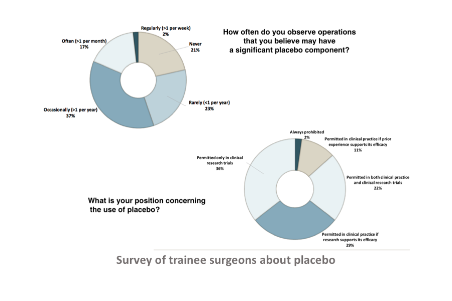

PUBLISHED PAPERS
-
Kjær SW, Rice ASC, Wartolowska K, Vase L. Neuromodulation: more than a placebo effect? Pain 2020;161(3):491-495 link
-
Vase L, Wartolowska K. Pain, placebo, and test of treatment efficacy: a narrative review. British Journal of Anaesthesia 2019;123:e254–e262 link
-
Wartolowska K. The nocebo effect as a source of bias in the assessment of treatment effects. F1000Research Latest published: 11 Mar 2019, 8:5 link
-
Wartolowska K, Beard D, Carr A. Blinding in trials of interventional procedures is possible and worthwhile. Version 2 link F1000Research 2017;6:1663 [revised Jan 2018]
-
Wartolowska K, Gerry S, Feakins BG, Collins GS, Cook J, Judge A, Carr AJ. A meta-analysis of temporal changes of response in the placebo arm of surgical randomized controlled trials: an update Trials 2017;18:323 link
-
Wartolowska K, Beard DJ, Carr AJ The use of placebos in controlled trials of surgical interventions: a brief history. Journal of the Royal Society of Medicine 2018;111:177-182 linkWartolowska KA , Feakins BG, Collins GS, Cook J, Judge A, Rombach I, Dean BJF, Smith JA, Carr AJ. The magnitude and temporal changes of response in the placebo arm of surgical randomized controlled trials: a systematic review and meta-analysis. Trials 2016;17:589 linkSavulescu J, Wartolowska K (joint first author), Carr AJ. Randomised placebo-controlled trials of surgery: ethical analysis and guidelines. Journal of Medical Ethics 2016; 42:776-783Wartolowska K , Collins GS, Hopewell S, Judge A, Dean BJ, Rombach I, Beard DJ, Carr AJ. Feasibility of surgical randomised controlled trials with a placebo arm: a systematic review. BMJ Open 2016;6:e010194 linkGeorge AJT, Collett C, Carr AJ, Holm S, Bale C, Burton S, Campbell M, Coles A, Gottlieb G, Muir K, Parroy S, Price J, Rice ASC, Sinden J, Stephenson C, Wartolowska K , Whittall H. When should placebo surgery as a control in clinical trials be carried out? Bulletin of The Royal College of Surgeons of England 2016;98:75-79 linkBaldwin MJ, Wartolowska K (joint first author), Carr AJ. A survey on beliefs and attitudes of trainee surgeons towards placebo. BMC Surgery 2016;16:27 linkWartolowska K Beard DJ, Carr AJ. Attitudes and beliefs about placebo surgery among orthopaedic shoulder surgeons in the United Kingdom PLoS ONE 2014; 9:e91699. linkWartolowska K , Judge A, Hopewell S, Collins GS, Dean BJ, Rombach I, Brindley D, Savulescu J, Beard DJ, Carr AJ. Use of placebo controls in the evaluation of surgery: systematic review. BMJ 2014;348:g3253. link
INVITED TALKS AND LECTURES
- "Ethical and Practical Considerations for and Against Placebo Control in the Assessment of the Effectiveness of Physical and Surgical Analgesic Interventions - topical workshop with Prof Luana Colloca and Prof Lene Vase. 17th IASP World Congress on Pain. Boston, USA (2018)
- "Fake surgeries and dummy pills - control for bias and study design in trials on treatment efficacy in chronic pain" - an invited lecture. 'Introduction to Study Design and Research Methods' teaching module, Oxford, UK (2018). Podcast available here
- "A placebo control group in surgical randomised controlled trials - when is it useful, ethical and necessary?" - an invited lecture The Wounds Research Network (WReN) 2018 Scientific Meeting, Newcastle, UK (2018)
- ”Can and should placebo control be used in randomised controlled trials of surgical, physical and neuromodulation interventions?” – a workshop 6th International Congress on Neuropathic Pain (NeuPSIG), Gothenburg, Sweden (2017)
- "Placebo controls in surgery" – a lecture at the BAPRAS Winter Scientific Meeting London, UK (2016)
- "Ethical issues of sham surgery for orthopaedic surgery" Bioethics/HRA workshop on the use of sham surgery Nuffield Council on Bioethics, Bedford Place, London (2015)
CONFERENCE PRESENTATIONS
- Wartolowska K, Gerry S, Feakins BG, Collins GS, Cook J, Judge A, Carr AJ Temporal characteristics of effect size in the placebo arm of surgical randomised controlled trials: a meta- analysis. – at talk Evidence Live Oxford, UK (2017)
- Wartolowska K, Judge A, Dean B Rombach I, Savulescu J, Beard D, Carr A The use of placebo in randomised surgical clinical trials (a poster) The 2nd Clinical Trials Methodology Conference: Methodology Matters Edinburgh, UK (2013) link
- Wartolowska K, Judge A, Dean B, Rombach I, Savulescu J, Beard D, Carr A Benefits and harms of placebo in surgical randomised clinical trials: a systematic review (a poster) The 2nd Clinical Trials Methodology Conference: Methodology Matters, Edinburgh, UK (2013) link
BLOGS
- F1000 Electrical shavers and splashed saline – how blinding has been achieved in surgical placebo-controlled trials link
- Journal of Medical Ethics “Randomised Placebo-Controlled Trials of Surgery: Ethical Analysis and Guidelines” link
- OCTRU website link